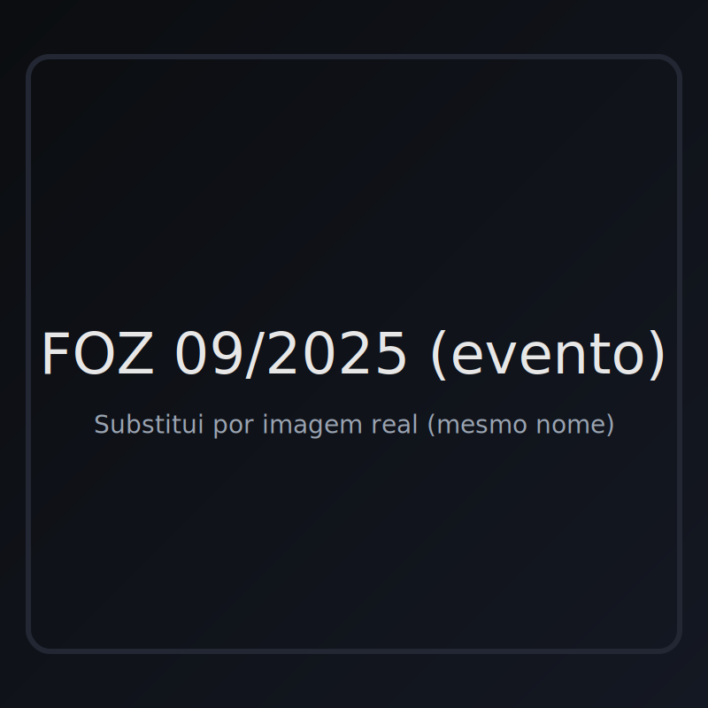

SP ROCHA
Roda da Foz
Roda ao Centro
Músicas
RODA DA FOZ
Porto · Foz do Douro
07/2025
Foz do Douro, Porto
Destaque
Vídeo: YouTube (embed oficial)
Créditos:
Roda da Foz

09/2025
Foz do Douro, Porto
Arquivo
Vídeo: YouTube (embed oficial)
Créditos:
Roda da Foz
Foto
Fechar